Cuenta atrás
Nos vemos en el castillo en
Hoy celebramos. Gracias por estar aquí.
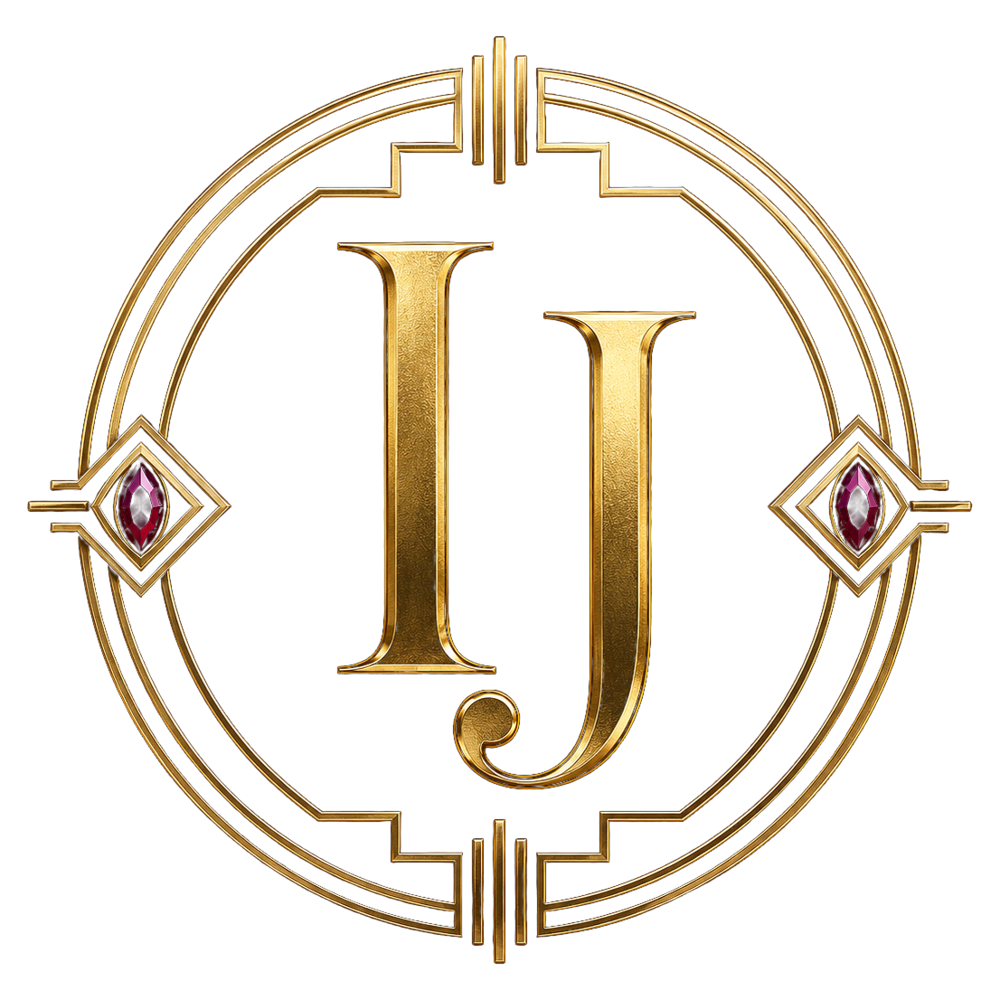
Boda de Ismael & Juangui
Ismael & Juangui
12 de septiembre de 2026 · Castillo de Guadamur, Toledo
El océano nos separaba, la Gran Vía nos unió y Madrid hizo el resto.

Nuestra historia
Un día para celebrar juntos
Nuestra historia comenzó el 18 de julio de 2019, en una calurosa tarde de verano en Gran Vía. Nos vimos por primera vez cuando Juan salía del probador en Zara donde estaba comprando la camisa para su graduación, que era al día siguiente.
Tomamos unas cañas y “blancos de verano” en la Tita Rivera y entre risas fue el comienzo de algo muy especial. Nos despedimos con un bonito beso en la parada de bicis de Pedro Zerolo.
Desde entonces hemos compartido viajes, celebraciones, proyectos, momentos inolvidables y también los días más cotidianos, esos que al final son los que construyen una vida juntos. Hemos aprendido a acompañarnos, a cuidarnos y a disfrutar de cada paso del camino.
Por eso hoy estamos aquí. Porque después de todos estos años, queremos seguir escribiendo nuestra historia rodeados de quienes la han hecho aún más especial. Gracias por acompañarnos en uno de los días más felices de nuestra vida.
¡Vamos a celebrarlo!
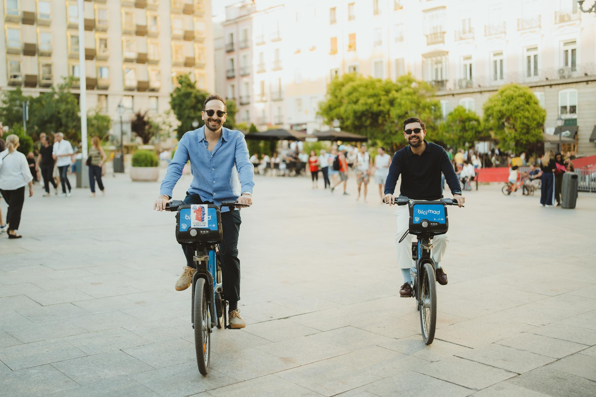
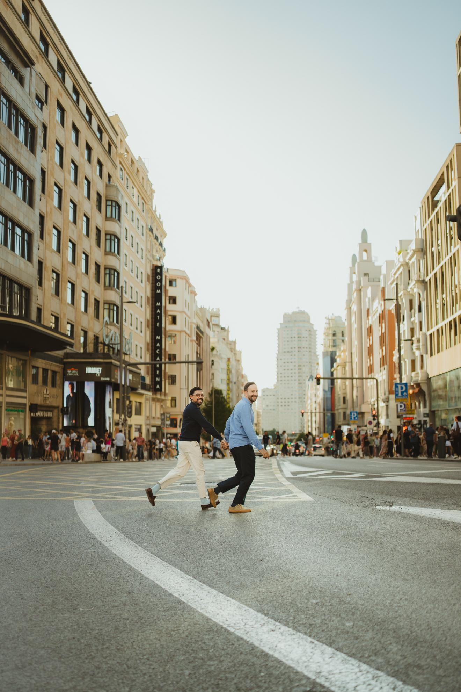
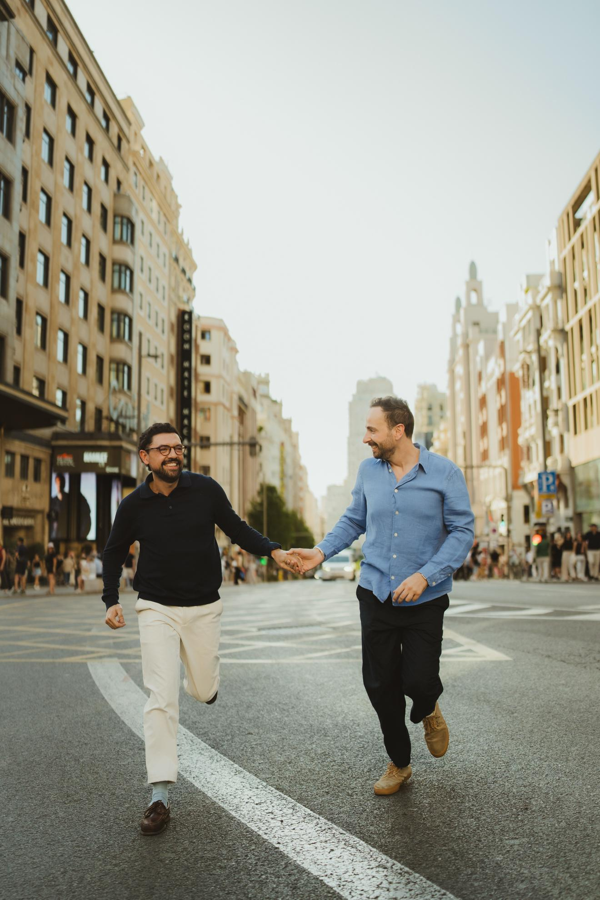
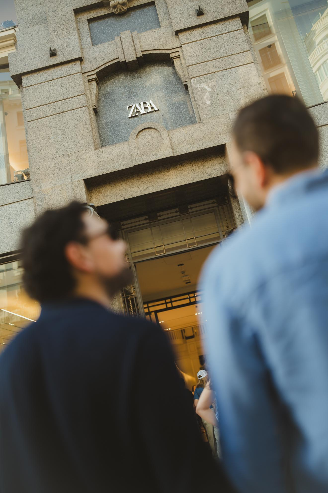
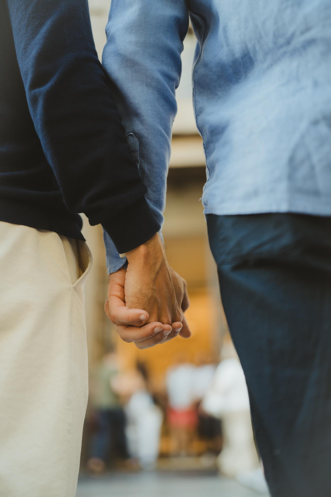
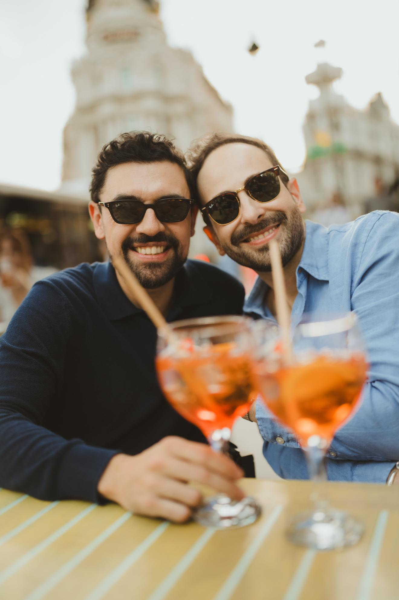
El lugar
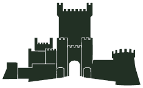
Castillo de Guadamur
Una fortaleza histórica en Guadamur, Toledo, convertida por una noche en escenario de celebración. Piedra, torres, atardecer y una fiesta pensada para vivirse como una gran entrada de gala.
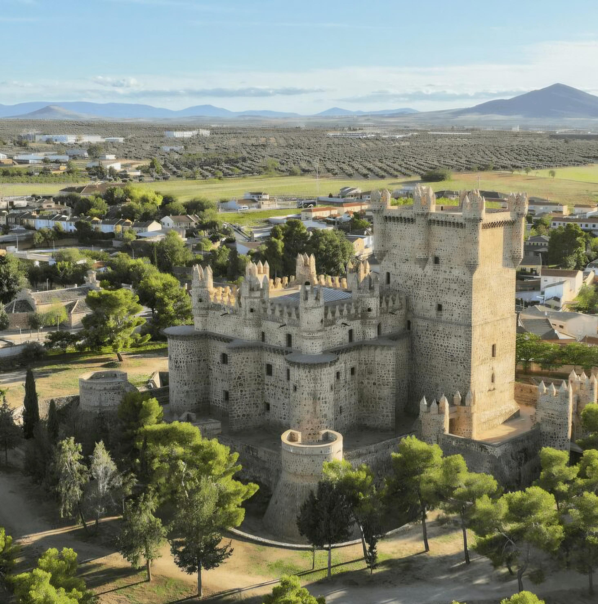
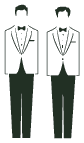
Ceremonia
El día que llevamos tanto tiempo soñando por fin llega. El 12 de septiembre de 2026, el Castillo de Guadamur abrirá sus puertas a las 17:15 h para que podáis recorrer sus estancias, hacer fotos y disfrutar del lugar donde todo comenzará.
A las 18:00 h celebraremos nuestra ceremonia, rodeados de quienes forman parte de nuestra historia. Será un momento emocionante y lleno de significado, en el que queremos que estéis muy presentes.
17:15
Visita del castillo y fotos antes de la ceremonia. Queremos compartir con vosotros unos momentos especiales y divertidos, por ello, os recomendamos llegar con antelación a partir de las 17:15 h.
18:00
La ceremonia, el momento central de la tarde.
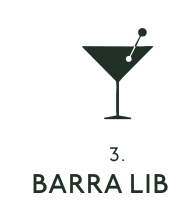
Banquete y fiesta
Después, disfrutaremos del cóctel y la cena, amenizada por DJ María Latina, que pondrá ritmo y energía a la noche desde el primer momento.
Y cuando llegue la hora de desmelenarse, continuaremos con barra libre y un auténtico fiestón con DJ Linapary, para bailar hasta que el cuerpo aguante.
Tras la ceremonia
Cóctel y cena en el castillo amenizados por DJ María Latina.
Fiesta
Barra libre. DJ Linapary para una noche con mucho ritmo.
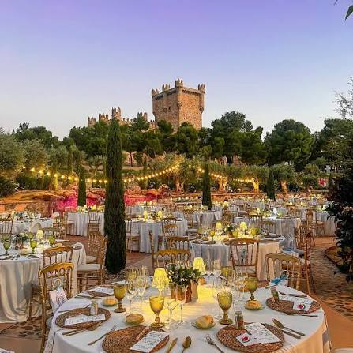
Música
Las DJs de la boda
La noche contará con DJ María Latina y DJ Linapary para llevar la celebración del castillo a la pista.
¿Nos ayudáis con la música? Contadnos qué canciones no pueden faltar en la fiesta. Podéis añadirlas en el siguiente enlace de Spotify (pídenos acceso).
Añadir canciones a la playlistDress code
Una pequeña gran Met Gala en un castillo
No se trata de seguir reglas, sino de romperlas con clase.
Queremos looks elegantes, creativos y con personalidad: magia, textura, brillo y carácter.
La inspiración es Met Gala, pero llevada a una noche de castillo: desde lo sobrio impecable hasta lo más teatral.
Evita chaquetas y vestidos blancos, marfil y tonos demasiado nupciales. Un accesorio blanco, una flor o un detalle puntual sí pueden encajar; lo que no buscamos es un look de novia/o.
Elegancia, arte y buen rollo.
Galería
Fotos y momentos
Compartid vuestras fotos y recuerdos con #ismaelyjuangui
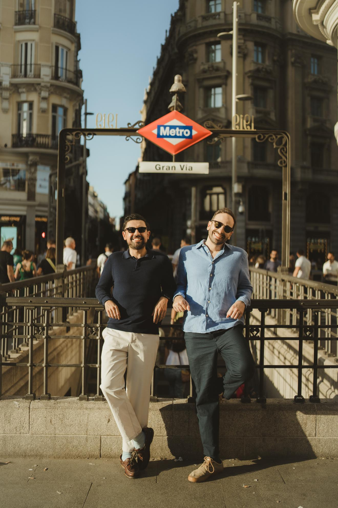
Confirmación
Confirmación
Por favor, confirma tu asistencia para ayudarnos con la organización de mesas y la celebración.
Enlace próximamente: bus, celíacos, embarazadas y otros detalles importantes.
Regalos
Tu presencia es el mejor regalo
Nuestro mejor regalo sois vosotros. Si aún así queréis tener un detalle con nosotros, aceptamos sobres con mucho cariño para seguir descubriendo el mundo juntos.
IBAN: ES52 1583 0001 1891 1412 1178
Código BIC/SWIFT: REVOESM2
Beneficiario: I Balmaseda Galan & J Ruiz Bravo
Nombre y dirección del banco: Revolut Bank UAB. Calle Príncipe de Vergara 132, 4 planta, 28002, Madrid, Spain
BIC del banco corresponsal: CHASDEFX
Preguntas frecuentes
Información útil
Transporte y alojamiento
Lo ideal es alojarse en el propio Guadamur, donde hay opciones de casas en Airbnb y Booking a distancia andando del castillo; también hay dos hoteles cercanos, uno en Pulgar (el pueblo de Ismael) y otro en Layos. Otras opciones son alojarse en el centro de Toledo, aunque tened en cuenta que los taxis y el transporte privado no suelen cubrir esa ruta habitualmente, o venir directamente desde Madrid el mismo día organizando un coche o conductor para los trayectos.
¿Habrá preboda o evento el viernes 11 de septiembre?
El día antes organizamos una pequeña reunión pre-boda en Cobisa, un pueblo cercano, en una casa de la familia de Ismael. Os daremos info del horario más adelante, pero será de 7 a 12 aproximadamente. Será el inicio del finde donde vernos todos.
¿Dónde es la boda?
La celebración será en el Castillo de Guadamur, en Toledo. En la sección “El lugar” tienes el enlace directo a la ubicación.
¿Dónde indico alergias o necesidades especiales?
Lo recogeremos en el cuestionario de invitados: alergias, intolerancias, celiaquía, embarazo, menú especial o cualquier detalle importante.
¿Cómo compartimos las fotos?
Más adelante añadiremos el enlace al álbum compartido para que podáis subir vuestras fotos.